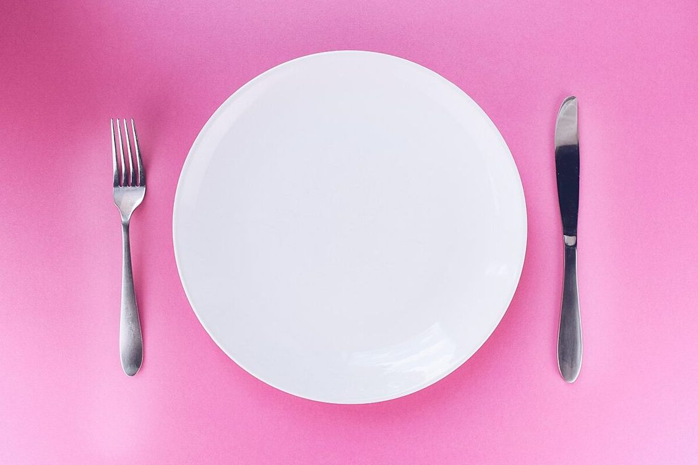
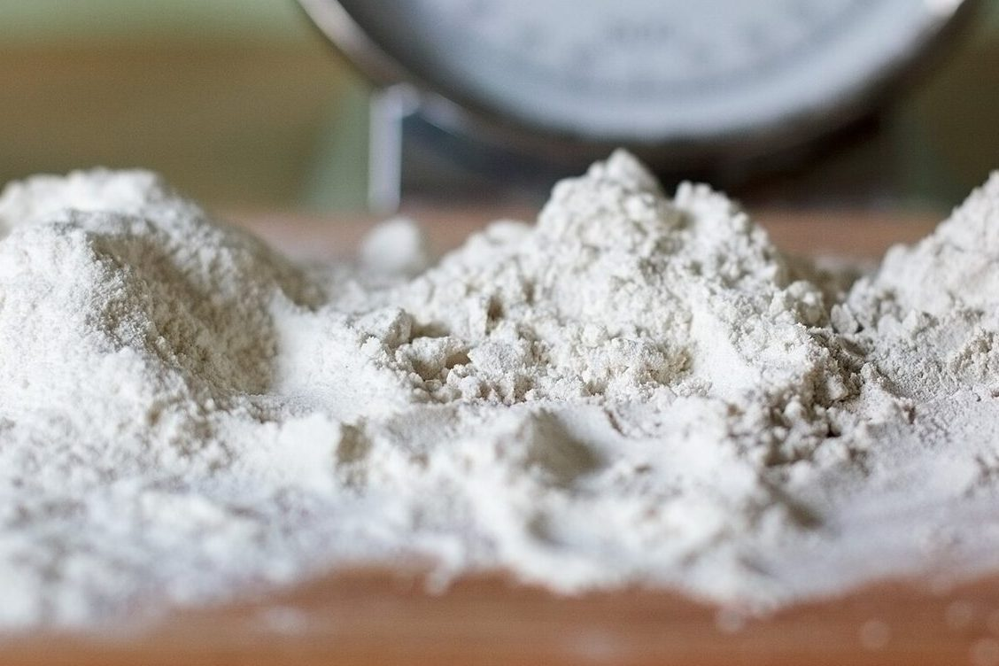
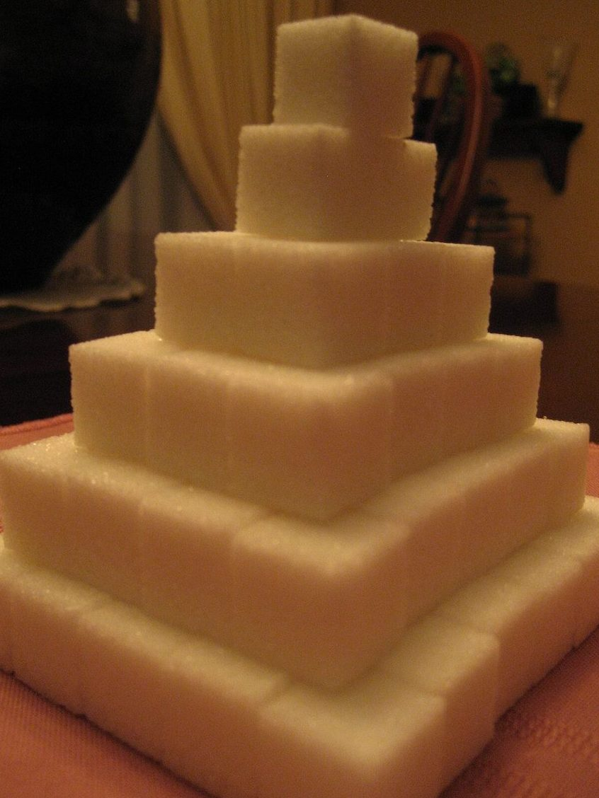
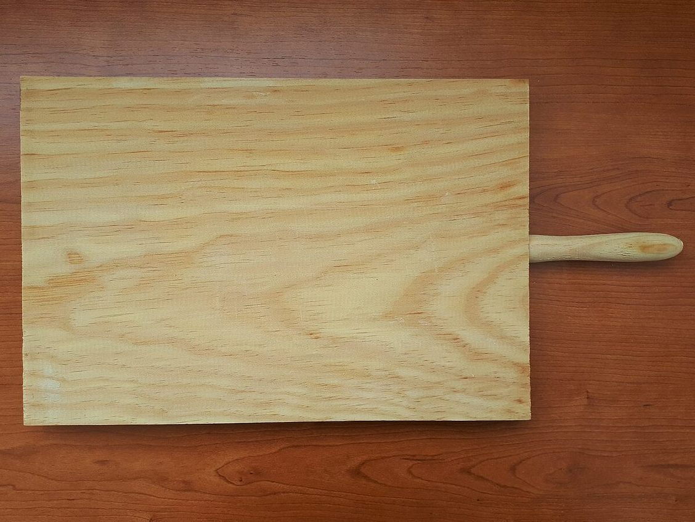
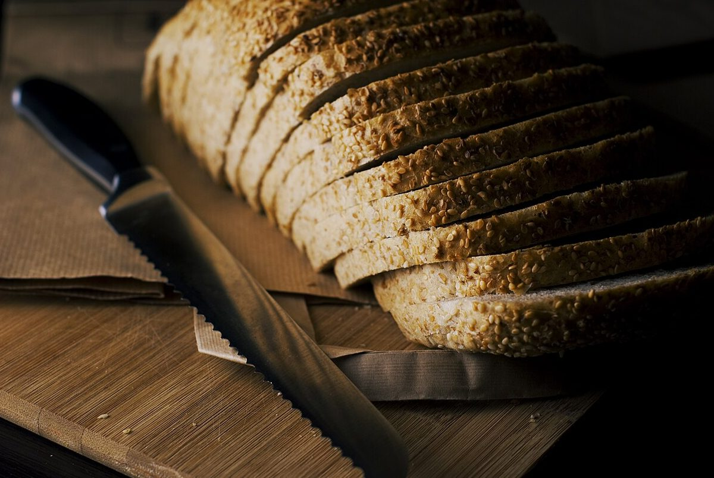

店のこと
店のこと & 確認できたこと
お店について確認できているのは、所在地・電話番号・Instagramのアカウントです。
このページの「見立て」の部分は、制作側が想像して書いたものです。お店の実際の様子・考え・メニューとは関係がありません。
確認できていること
- 店名は「and people」、業種はカフェ
- 所在地は島根県大田市三瓶町小屋原270(〒694-0224)
- 電話番号は080-6318-3398
- Instagramのアカウントは @and_people20
- 営業時間・定休日・メニュー・価格・ご予約・駐車場は準備中

見立て
「and」を、ふたつ組で眺める
由来は分かりません。制作側は「and」という言葉から、何かと何かをつなぐ記号「&」を思い浮かべました。粉と砂糖、まな板とパン切りナイフ。ふたつ並べると、そこに「&」が見えてくる。そんな見立てで、写真を組にして並べています(実際のお店の姿ではありません)。


03 粉と砂糖粉 & 砂糖


04 まな板とパン切りナイフまな板 & パン切りナイフ